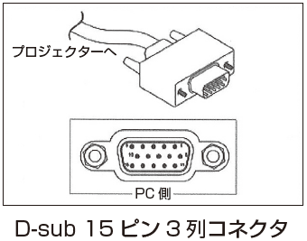
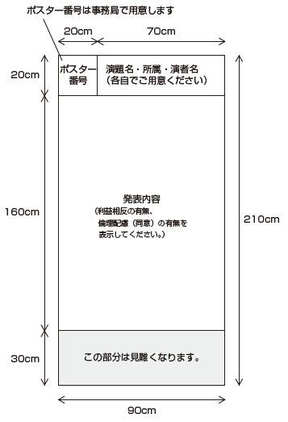

司会・座長・演者へのご案内
口演発表
司会・座長の方へ
- ご担当セッションの開始10分前までに会場内右前方の次座長席へご着席ください。
- プログラムの円滑な進行のため、発表時間の厳守にご協力ください。発表時間はセッションにより異なります。セッションの講演時間は、各司会・座長に一任いたします。
演者の方へ
1. 発表データ受付
発表開始の30分前までに「発表データ受付（PC受付）」にて、動作確認および発表データの提出を行ってください。
発表データ受付の場所と受付時間は下記の通りです。
| 場所 | パシフィコ横浜ノース 3F PC受付（ホワイエ） |
|---|---|
| 日時 |
12月10日（金）8:00～17:30 12月11日（土）8:00～16:30 ※12月10日（金）は翌日の発表データも受け付けいたします。 |
2. 発表時間
発表時間は事前にご案内のとおりです。
発表時間終了の1分前と終了時にランプでお知らせします。発表時間は厳守してください。
ご登壇15分前までに会場左手前方の次演者席へご着席ください。
3. 発表機材・発表データ
全会場とも、プロジェクター（スクリーン1面）投影によるPCプレゼンテーションです。
その他、DVD等の機材のご用意はございません。
- PCの仕様は以下の通りです。
OS：Windows 10
アプリケーション：Windows 版 PowerPoint 2010 / 2013 / 2016 - 発表スライドは16:9で作成してください。
- 持込可能なメディアはUSBメモリのみとなります。
- Mac OS等、上記以外の環境での発表を希望される場合はご自身のPCをお持ち込みください。
Windows PCの持ち込みも可能です。 - 動画や音声を含む場合は、ご自身のPCをお持ち込みください。
- セッション進行および演台スペースの関係上、PowerPointの発表者ツールは使用できませんのでご注意ください。
- 発表内容に個人が特定できるような表現（イニシャル等）が無いように注意してください。
【USBメモリでのデータ持ち込みの場合】
- 事前にウイルスに感染していないことを確認してください。
- 文字化けやレイアウトの崩れを防ぐためにOSに設定されている標準フォントをご使用ください。
- データの総量制限は特に設けません。決められた発表時間内に発表が終了するようにデータを作成してください。
- 演台上のマウスと操作キーをご自身で操作してプレゼンテーションを行ってください。
- お預かりした発表データは、学術集会終了後、事務局で責任をもって完全消去いたします。
【PC持ち込みの場合】
- 外部出力が可能であることを必す事前にご確認ください。
- 会場に用意するケーブルコネクタの形状はD-sub 15ピン3列コネクタ（図を参照）です。
この形状に変換するアダプタを必要とする場合は、必ずご持参ください。また、ACアダプタは必ずご用意ください。

- バックアップ用データとして、USBフラッシュメモリを必ずご持参ください。
- お持ち込みのPCは、発表データ受付にて接続テスト後、発表する会場にてお預かり、返却いたします。
4. 利益相反（COI）の開示について
抄録の内容に対して、企業等との利害関係の有無を開示する必要があります。
スライドの作成については、日本フットケア・足病医学会ホームページ をご確認ください。
リモートでご参加の司会・座長・演者の先生方へ
リモートでご参加の司会・座長・演者の先生には、当日接続用のURLを事前にメールにてご案内させていただきます。
当日は、ご担当セッションの1時間前に、その接続用URLからログインをお願いいたします。
一般演題（ポスター）発表の先生方へ
今学術集会は、現地開催を予定しており、一般演題は全てポスター発表となります。
- 採択された演者は、ポスターを作成いただき、会期当日ポスター会場に貼付してください。
- ポスター演者は、コアタイムにご自身のポスター前にて、参加者と質疑応答・意見交換を行ってください。
- 一般演題（ポスター）発表ごとのコアタイムは、下記表、日程表およびプログラムにてご確認ください。
ポスターセッションコアタイムコアタイム日時 テーマ 演題番号 12月10日（金）
16:30～17:00ポスター 1. 教育（患者および医療者） PO-01～PO-03 ポスター 3. リハビリテーション PO-11～PO-18 ポスター 6. 在宅医療 PO-41～PO-47 ポスター10. 創傷治癒・創傷ケア PO-67～PO-71 ポスター12. 腎不全・透析・腎移植 PO-85～PO-90 ポスター13. リンパ浮腫・静脈疾患 PO-91・PO-92 ポスター15. 感染 PO-101・PO-102 12月11日（土）
11:20～11:50ポスター 2. 検査・診断・アセスメント・病態 PO-04～PO-10 ポスター 5. チーム医療・地域連携 PO-30～PO-40 ポスター 9. 創傷治癒・創傷ケア PO-56～PO-66 ポスター16. その他 PO-103～PO-113 12月11日（土）
14:00～14:30ポスター 4. チーム医療・地域連携 PO-19～PO-29 ポスター 7. 糖尿病 PO-48～PO-50 ポスター 8. 予防対策 PO-51～PO-55 ポスター11. フットケア PO-72～PO-84 ポスター14. 血行再建・血管内治療 PO-93～PO-100 - ポスターパネルは、高さ210cm、横幅90cmです。

一般演題優秀賞候補演題（口演）発表の先生方へ
採択した一般演題より優秀賞候補演題を選出いたしました。
- 優秀賞候補演題は、12月11日（土）15:40～16:40に口演を行い、最優秀賞１題と優秀賞1題を選出いたします。
- 優秀賞候補演題の演者は、ポスターと口演発表スライドを作成してください。
- 発表：7分 質疑：3分です。
優秀賞候補演題
| 演題番号 | 演題名 |
|---|---|
| AW-1 | 体組成計からみた廃用性浮腫の特徴ならびに薬剤性浮腫との関係 |
| AW-2 | 高齢透析患者の「自分の足に触れる」行為の実態と足トラブルの現状 |
| AW-3 | 包括的高度慢性下肢虚血により下腿切断となったが、義足着用し主婦業を再獲得できた一症例 |
| AW-4 | 組織酸素飽和度カメラ（Snapshot）による足部血流評価の有用性 |
| AW-5 | 糖尿病患者における足趾屈曲筋力は糖尿病神経障害の評価に有用である |
| AW-6 | フットケア地域連携パスを使用した創傷改善への介入効果 |
お問い合わせ先
連絡事務局
株式会社コンベックス内
〒106-0041 東京都港区麻布台1-11-9 BPRプレイス神谷町
TEL：03-3505-1600 FAX：03-3505-3366
E-mail：jfcpm2021@convex.co.jp